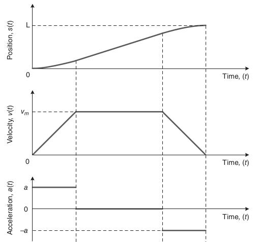
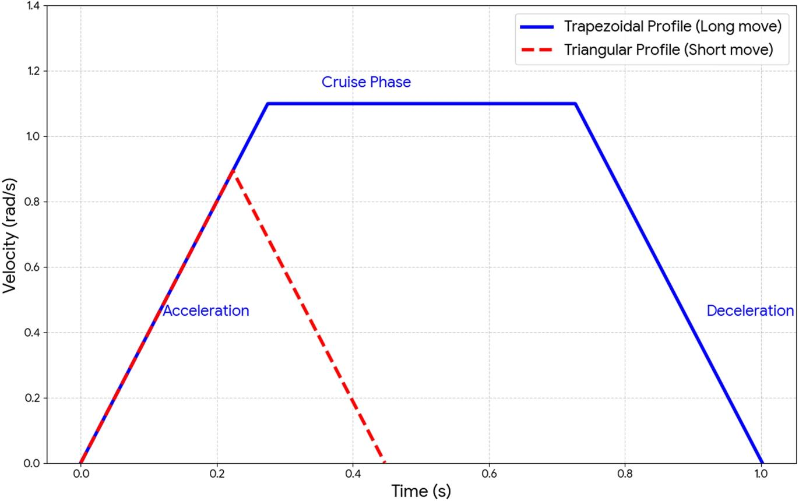
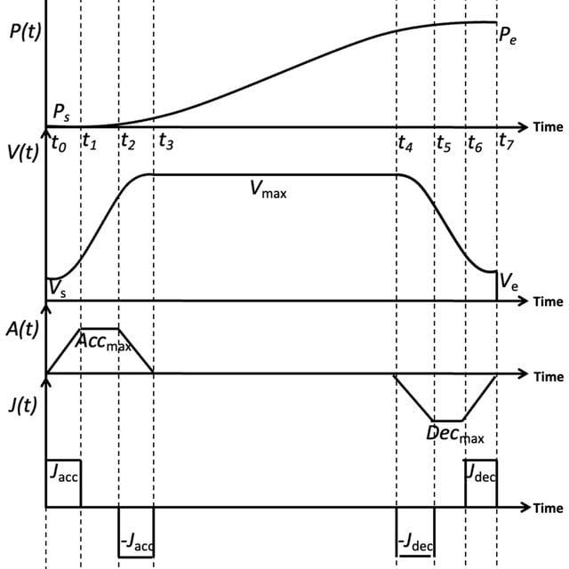

Study path: 02_PLAN_WISE_2026\02_INDUSTRY3_0\02_Auto_Tech\06_Servo_Motion\06_Motion_Profiles
1. What is a motion profile?
A motion profile defines how a motor-driven axis should move from its current state to a target state over time. It describes the desired position, velocity, acceleration and, in advanced profiles, jerk.
A motion controller uses the profile to generate a reference trajectory. The servo drive then controls the motor to follow that trajectory as closely as the motor, load, feedback system and mechanical arrangement allow.
For example, consider a servo-driven transfer unit moving a component from a loading station to a robotic welding station.
The controller must determine:
- How quickly the axis accelerates.
- What maximum speed it can reach.
- When it begins decelerating.
- How smoothly it approaches the target.
- When the position is accurate and stable enough for the next operation.
Without a properly designed profile, the axis might reach the target quickly but cause vibration, mechanical impact, component movement or excessive drive current.
Motion control architecture
PLC / Motion Controller
|
v
Target position + motion limits
|
v
Motion Profile Generator
|
v
Position / Velocity / Acceleration Reference
|
v
Servo Drive Control Loops
|
v
Servo Motor
|
v
Mechanical Load
|
v
Encoder Feedback
|
+------> Actual motion compared with command
The motion profile defines the desired movement. The drive control loops attempt to make the actual movement follow it.
Important distinction: A good motion profile does not automatically guarantee good positioning. Poor servo tuning, encoder problems, mechanical backlash, excessive load or insufficient motor torque can still cause inaccurate motion.
2. Fundamental motion parameters
A motion profile is built around four primary kinematic quantities.
| Parameter | Symbol | Meaning | Typical linear unit |
|---|---|---|---|
| Position | \(x\) | Location of the axis | mm |
| Velocity | \(v\) | Rate of change of position | mm/s |
| Acceleration | \(a\) | Rate of change of velocity | mm/s² |
| Jerk | \(j\) | Rate of change of acceleration | mm/s³ |
The mathematical relationships are:
For a rotary axis, position might be measured in degrees, velocity in degrees/s and acceleration in degrees/s². Motor shaft speed may instead be expressed in RPM.
2.1 Position
Position indicates where the axis is located.
Examples:
- Conveyor index position: 250 mm.
- Servo slide target: 650 mm.
- Rotary table target: 180°.
- Robot joint target: a specified joint angle.
Position commands may be absolute or relative.
- Absolute move: Move to a specified coordinate, such as 650 mm.
- Relative move: Move a specified distance from the current position, such as another 100 mm.
These are command types, not different motion-profile shapes.
2.2 Velocity
Velocity determines how quickly the axis moves and strongly influences cycle time.
Increasing velocity can shorten a move, but only if the axis travels far enough to reach that velocity. The motor, gearbox, load and machine structure must also support it.
High speed is not always the best choice. A short indexing movement may never reach the configured maximum velocity.
2.3 Acceleration and deceleration
Acceleration determines how quickly the axis gains speed. Deceleration determines how quickly it slows down.
Higher acceleration generally requires greater torque, especially when accelerating a high-inertia load.
For rotational motion:
Where:
- \(T\) is the required net torque.
- \(J\) is the total rotational inertia referred to the relevant shaft.
- \(\alpha\) is angular acceleration.
This simplified equation excludes friction, gravity and other external loads. Those must be included in a real motor-sizing calculation.
Aggressive deceleration can also generate substantial braking torque and regenerative energy.
2.4 Jerk
Jerk describes how quickly acceleration changes.
Suppose a transfer unit is initially stationary. It starts accelerating, reaches a steady acceleration, then suddenly switches to deceleration. The abrupt changes in acceleration create high jerk.
High jerk can excite structural resonances, produce vibration and disturb the load.
Limiting jerk makes acceleration transitions smoother. This is particularly useful for:
- High-inertia rotary tables.
- Long servo slides.
- Precision positioning.
- Fragile components.
- Machines with belts, couplings or compliant structures.
- Liquid-carrying systems where sloshing is a concern.
Jerk is not the same as acceleration. Acceleration determines the rate at which velocity changes; jerk determines how quickly that acceleration changes.
3. The three main motion-profile shapes
The most important profiles to understand are trapezoidal, triangular and S-curve.

3.1 Trapezoidal velocity profile
The axis accelerates, travels at a constant velocity and then decelerates. The velocity-versus-time graph resembles a trapezoid.
Best understood as a practical, time-efficient profile when the move is long enough to reach the commanded maximum velocity.

3.2 Triangular velocity profile
The axis accelerates and then immediately decelerates without a constant-speed segment.
Common when the commanded move is too short to reach maximum velocity.

3.3 S-curve profile
Acceleration changes progressively rather than switching abruptly. The velocity graph has a smooth, rounded shape, while acceleration ramps up and down.
Useful when smoothness, reduced vibration and controlled mechanical stress matter.
The exact shape depends on which graph is plotted. A trapezoidal velocity profile has an approximately rectangular acceleration pattern with abrupt transitions. An S-curve velocity profile has smooth velocity transitions because its acceleration is ramped.
4. Trapezoidal velocity profile in detail
A trapezoidal profile typically has three phases:
- Acceleration: Velocity rises from the initial value.
- Constant velocity: The axis travels at the maximum commanded speed.
- Deceleration: Velocity falls toward the final value.
For a rest-to-rest move, the initial and final velocities are both zero.
4.1 Operating sequence
Velocity
^
| __________
| / \
| / \
|_______/ \_______> Time
Accel. Cruise Decel.
The velocity graph shows the intended command, not necessarily the exact physical velocity. Actual motion can differ due to load, tuning, torque limits and mechanical constraints.
4.2 Main equations
Assume:
- The axis starts and ends at rest.
- Acceleration and deceleration magnitudes are equal.
- Acceleration is constant during the acceleration phase.
- There are no speed, torque or travel constraints beyond those specified.
Let:
- \(D\) = total travel distance.
- \(V\) = commanded maximum velocity.
- \(A\) = acceleration magnitude.
- \(t_a\) = acceleration time.
- \(D_a\) = distance travelled during acceleration.
Acceleration time:
Acceleration distance:
For symmetric acceleration and deceleration, the total distance consumed by both phases is:
Cruise distance:
Cruise time, if the cruise distance is positive:
Total move time:
These equations describe an idealized profile. Real controllers may apply additional limits, jerk constraints, blending rules and internal timing resolution.
4.3 Worked example: a 500 mm transfer
A servo slide must move 500 mm with:
- Maximum velocity: 1,000 mm/s.
- Acceleration: 2,000 mm/s².
- Deceleration: 2,000 mm/s².
Step 1: Calculate acceleration time.
Step 2: Calculate acceleration distance.
The axis needs 250 mm to accelerate to 1,000 mm/s.
Deceleration requires another 250 mm.
The entire move is consumed by acceleration and deceleration. There is no cruise segment.
The axis therefore follows a triangular profile, even though its maximum velocity was configured as 1,000 mm/s.
Step 3: Calculate peak velocity.
For a symmetric triangular move:
In this example, the axis reaches exactly the configured maximum velocity at the transition between acceleration and deceleration, leaving zero time at constant speed.
Step 4: Calculate total time.
Ideal motion time is 1 second, excluding settling, PLC sequencing, clamping and other machine-cycle operations.
4.4 How to identify a triangular move
For a symmetric rest-to-rest move, calculate the distance needed to accelerate and decelerate to the requested speed:
- If \(D>D\_{\text{ramp}}\), a cruise segment is possible.
- If \(D=D\_{\text{ramp}}\), the profile reaches the speed limit at a single transition point.
- If \(D\<D\_{\text{ramp}}\), the requested speed cannot be reached. The controller must use a lower peak speed or another constrained trajectory.
This is why a short move can take nearly the same time even after increasing the maximum speed. The axis may already be acceleration-limited.
5. S-curve motion profile
An S-curve profile limits jerk by ramping acceleration up and down instead of changing it abruptly.
A simplified seven-segment S-curve may include:
- Positive jerk, increasing acceleration.
- Constant positive acceleration.
- Negative jerk, reducing acceleration to zero.
- Constant velocity.
- Negative jerk, building deceleration.
- Constant negative acceleration.
- Positive jerk, reducing deceleration to zero.
Not every S-curve uses all seven segments. Short moves may omit constant-acceleration or constant-velocity phases.
5.1 Why use an S-curve?
Consider a heavy fixture carried by a servo-driven transfer slide. A sudden acceleration change can excite the frame, belt, gearbox or mounting structure. The resulting vibration may continue even after the commanded position has been reached.
A jerk-limited profile can reduce the excitation by making the transitions smoother.
Typical benefits include:
- Reduced mechanical shock.
- Lower vibration and resonance excitation.
- Less product movement.
- Reduced stress on couplings, belts and fixtures.
- Improved settling behaviour in suitable applications.
However, an S-curve is not automatically faster or more accurate. For the same maximum velocity and acceleration, limiting jerk may increase move time. If cycle time must remain unchanged, the controller may need higher acceleration or other changes, subject to mechanical and drive limits.
5.2 Trapezoidal versus S-curve
| Feature | Trapezoidal | S-curve |
|---|---|---|
| Acceleration transitions | Abrupt in the ideal model | Smooth and jerk-limited |
| Profile complexity | Simpler | More complex |
| Mechanical shock | Potentially higher | Often lower |
| Vibration risk | May excite resonances | Can reduce excitation |
| Short-move behaviour | Can become triangular | May have fewer than seven segments |
| Cycle time | Often efficient | May take longer at the same limits |
| Typical use | General positioning | Smooth, precision or high-inertia motion |
Use a trapezoidal profile when the machine can tolerate the acceleration transitions and cycle time is a priority. Consider an S-curve when vibration, product stability, mechanical stress or settling time is a significant concern.
6. Other motion commands and trajectory types
A motion profile is the trajectory shape. A motion command describes the kind of movement being requested. These concepts are related, but they are not interchangeable.
| Command or concept | Meaning | Example |
|---|---|---|
| Absolute positioning | Move to a target coordinate | Move to 600 mm |
| Relative positioning | Move by a specified distance | Move another 150 mm |
| Velocity mode | Continue at a commanded velocity | Run a conveyor at 300 mm/s |
| Point-to-point motion | Reach a target point | Index a rotary table |
| Continuous-path motion | Follow a coordinated path | Robot welding trajectory |
| Electronic gearing | Maintain a defined master/follower ratio | Follower conveyor tracks master speed |
| Electronic camming | Follow a programmed relationship to a master axis | Flying cutoff or synchronized feeder |
Absolute and relative moves can both use trapezoidal or S-curve profiles, depending on the motion controller and configuration.
6.1 Polynomial profiles
Some controllers and trajectory planners use polynomial functions to create smooth motion.
Cubic and quintic trajectories can be designed to satisfy specified boundary conditions such as initial and final position, velocity and acceleration.
These are particularly relevant in robotics and trajectory planning. They are not simply different names for trapezoidal and S-curve profiles. Their mathematical formulation and boundary constraints differ.
7. Choosing the motion-profile parameters
A motion profile is not defined by speed alone. Its settings must match the machine's mechanical capabilities and production requirements.
| Parameter | What it controls | What can go wrong |
|---|---|---|
| Target position/distance | Required movement | Incorrect coordinate or scaling |
| Maximum velocity | Speed limit | Excessive speed or unnecessary cycle time |
| Acceleration | Speed increase | High torque, current or vibration |
| Deceleration | Speed reduction | Regenerative overvoltage or excessive braking torque |
| Jerk | Rate of acceleration change | Too high: shock; too low: potentially longer moves |
| Dwell time | Pause after movement | Unnecessary cycle time or inadequate process timing |
| Position tolerance | Accepted position error | Process starts before alignment is adequate |
| Settling time | Time allowed for motion to stabilize | Premature clamping, welding or transfer |
| Torque/current limits | Drive effort constraints | Motion may not follow the requested trajectory |
| Travel limits | Permitted axis range | Limit switch or software-limit faults |
7.1 Symmetric versus asymmetric acceleration
Some applications use different acceleration and deceleration limits.
For example, a horizontal transfer slide may accelerate quickly while using a gentler deceleration to prevent a component from shifting.
For an ideal trapezoidal profile with unequal acceleration and deceleration magnitudes:
Where \(A_a\) is acceleration magnitude and \(A_d\) is deceleration magnitude.
The cruise distance is:
If \(D_c\) is negative, the requested maximum speed cannot be reached under those constraints. A lower peak speed is required.
7.2 Choose parameters for the entire machine cycle
A servo axis may finish its commanded movement in 0.8 seconds but still require:
- 0.2 seconds to settle.
- 0.5 seconds for a clamp to close.
- 0.3 seconds for a sensor confirmation.
- 0.4 seconds for the next process step.
Reducing movement time by 0.1 seconds does not necessarily reduce the total cycle by 0.1 seconds. The axis might not be the cycle bottleneck, and other operations may overlap or occur sequentially.
The useful target is the machine cycle, not an isolated speed number.
8. Application examples
8.1 Conveyor indexing
A servo-driven conveyor advances a component by a fixed distance and stops at a process station.
A trapezoidal profile may be suitable for robust, general-purpose indexing. An S-curve may help when the component can slide, tip or become misaligned during acceleration.
Check the belt's tension, friction, load distribution, motor torque and stopping accuracy.
8.2 Robotic transfer unit
A heavy fixture moves between two stations.
High inertia can make acceleration and deceleration the dominant constraints. Excessive acceleration may cause following error or high current; excessive jerk may excite structural vibration.
A jerk-limited profile may improve settling, but the result must be verified with actual motion data.
8.3 CNC axis
A CNC machine must coordinate multiple axes to follow a programmed contour.
Optimizing one axis independently can distort the intended path or create timing mismatch with other axes. The CNC controller must generate coordinated trajectories while respecting velocity, acceleration, jerk and machine geometry constraints.
8.4 Rotary indexing table
A rotary table indexes through a specified angle and stops for machining or assembly.
The controller must account for rotary inertia, gearbox ratio, backlash, fixture mass, braking torque and the required settling tolerance. A high-inertia table may benefit from smooth acceleration transitions, especially if mounted equipment is sensitive to vibration.
8.5 Liquid handling
A servo moves a vessel containing liquid.
Even if the motor can tolerate a sharp acceleration transition, the liquid may slosh and require additional settling time. A smoother profile may reduce total process time by avoiding long waiting periods after the move.
9. Multi-axis motion and the next topic
When two or more axes must move together, their profiles need to be coordinated.
Examples include:
- A conveyor and a feeder moving at matching speeds.
- A robot carrying a component while following a programmed path.
- A flying cutoff system tracking a continuously moving web.
- A gantry using two motors to move one mechanical structure.
For coordinated motion, the controller must account for the relationship between the axes, their start times, velocities, accelerations and target positions.
A profile for one axis is not enough to guarantee that two axes remain synchronized. That is the subject of the next topic, 07_Synchronization - Synchronization.
10. Servo drive and regenerative-energy constraints
When a motor decelerates, it may act as a generator. The resulting energy can flow back into the servo drive's DC bus.
Depending on the drive architecture, regenerated energy may be:
- Absorbed by other axes sharing a DC bus.
- Dissipated through a braking resistor.
- Returned to the supply by a regenerative drive.
- Temporarily stored in the DC-link capacitors.
If deceleration is too aggressive, the drive may encounter DC-bus overvoltage, excessive current or braking-system limitations.
When an axis faults during deceleration, do not immediately reduce the deceleration parameter without checking the evidence. Inspect the drive alarm, DC-bus voltage, actual velocity, torque/current demand, load inertia and braking hardware.
The profile must remain within the motor, drive, supply and mechanical limits.
11. Motion profile versus servo tuning
This distinction is essential for troubleshooting.
| Observation | Possible profile-related cause | Other causes to investigate |
|---|---|---|
| Vibration during acceleration | Excessive acceleration or jerk | Mechanical resonance, loose mounting, servo tuning |
| High following error | Aggressive trajectory | Insufficient torque, incorrect tuning, feedback fault |
| Overshoot at the target | Aggressive deceleration or unsuitable trajectory | Control-loop tuning, backlash, feedback scaling |
| Long move time | Low velocity or acceleration limits | Torque limits, load, controller constraints |
| Fault during deceleration | Excessive deceleration or jerk | Regenerative limits, braking resistor, drive fault |
| Position never settles | Profile too aggressive for the mechanics | Poor tuning, vibration, loose coupling, encoder issues |
A motion profile determines the requested movement. Servo tuning determines how the control system responds to errors while tracking that movement.
Increasing acceleration can increase torque demand and following error. Increasing jerk can excite a mechanical resonance. Neither problem should be treated as proof that the servo needs only a profile change.
Recommended diagnostic sequence
- Read the exact drive and controller alarm.
- Compare commanded and actual position and velocity.
- Inspect following error during acceleration, cruise and deceleration.
- Check motor current or torque demand.
- Check DC-bus voltage when faults occur during braking.
- Inspect encoder feedback, mechanical looseness, coupling, belt tension and load conditions.
- Change one approved parameter at a time and validate the complete machine cycle.
12. PLC and motion-controller implementation
A typical point-to-point motion sequence is:
Validate axis state
|
v
Check permissives and travel limits
|
v
Set target and profile parameters
|
v
Issue motion command
|
v
Monitor busy / done / error
|
v
Confirm position and settling
|
v
Permit the next machine operation
On PLC platforms supporting PLCopen-style motion instructions, examples include:
MC_MoveAbsoluteMC_MoveRelativeMC_MoveVelocityMC_Stop
Instruction availability, parameter names and exact behaviour depend on the platform, motion library and drive configuration.
Practical implementation rules
- Use consistent engineering units and scaling.
- Confirm the axis reference and coordinate system before issuing a move.
- Validate the target against software travel limits.
- Monitor the instruction's actual status and error outputs.
- Use timeouts for fault detection, not as substitutes for motion-complete feedback.
- Confirm position and settling requirements before starting a process operation.
- Handle interrupted moves and reset/restart sequences deliberately.
- Apply change control to validated production motion parameters.
A timer that assumes the axis will always finish in 1 second is not a reliable replacement for the motion controller's completion status. Real machines occasionally disagree with our optimistic schedules.
13. Common faults and troubleshooting
| Symptom | First checks | Likely areas to investigate |
|---|---|---|
| Axis overshoots | Commanded versus actual position | Deceleration profile, tuning, feedback scaling |
| Axis vibrates during ramp | Acceleration and jerk settings | Resonance, mounting, servo tuning |
| Move is slower than expected | Actual peak velocity and acceleration | Short move, torque limit, load, controller limits |
| Axis never reaches commanded speed | Move distance and ramp distance | Triangular profile, speed/torque limits |
| Drive trips on deceleration | Alarm code and DC-bus trend | Regeneration, braking resistor, excessive deceleration |
| Following error increases under load | Actual versus commanded position | Torque capacity, inertia, tuning, mechanical binding |
| Component shifts during transfer | Acceleration/deceleration trend | Grip, friction, load distribution, jerk |
| Two axes finish at different times | Actual motion trends for both axes | Incorrect coordination, limits, feedback or mechanical differences |
| Axis reaches target but process fails | Position and settling confirmation | Tolerance, vibration, sensor logic, mechanical alignment |
The first task is to identify when the fault occurs: acceleration, constant velocity, deceleration, or settling. That timing often narrows the investigation faster than changing parameters at random.
14. Safety considerations
A normal motion profile is not necessarily a safety-rated stopping function.
The following must be considered during commissioning and troubleshooting:
- Follow the machine risk assessment and approved safety procedures.
- Do not bypass interlocks or guards to observe motion.
- Verify travel limits and permitted operating speeds.
- Treat vertical axes, suspended loads and stored mechanical energy as hazards.
- Confirm that stopping behaviour is appropriate for the load and machine.
- Use the safety-rated stop functions and hardware required by the machine's safety design.
- Make parameter changes only under the applicable authorization and validation process.
An ordinary deceleration command may not provide the same protection as a correctly implemented safety function. The distinction matters when an axis can injure someone.
15. Interview questions and answers
1. What is a motion profile?
A time-based reference trajectory defining the desired position, velocity, acceleration and sometimes jerk of a motion axis.
2. What are the main phases of a trapezoidal profile?
Acceleration, constant velocity and deceleration.
3. What is a triangular velocity profile?
A profile in which the axis accelerates and then decelerates without a constant-velocity segment, typically because the move is too short to reach the requested maximum speed.
4. What is jerk?
The rate of change of acceleration. It is measured in mm/s³ for linear motion or angular units/s³ for rotary motion.
5. Why use an S-curve profile?
To limit jerk and reduce abrupt acceleration transitions, which can reduce vibration, mechanical shock and load movement.
6. Is an S-curve always faster than a trapezoidal profile?
No. Under identical maximum velocity and acceleration constraints, jerk limiting may increase the required move time.
7. What happens if acceleration is increased excessively?
Torque demand and current may rise, following error may increase, and the machine may experience vibration or drive faults.
8. Why might an axis never reach its configured maximum velocity?
The move may be too short, or the drive, motor, load or controller may impose tighter limits.
9. What is the difference between a motion profile and servo tuning?
The profile defines the desired trajectory. Servo tuning determines how the feedback control system responds to deviations from that trajectory.
10. Why can a drive trip during deceleration?
Possible causes include excessive regenerative energy, DC-bus overvoltage, braking-system limitations or excessive braking demand.
11. How can an engineer distinguish a profile problem from a mechanical problem?
Compare commanded and actual motion, inspect following error and current/torque trends, and check mechanical condition and feedback integrity.
12. Why is a fixed timer not sufficient to confirm motion completion?
Actual completion depends on load, faults, limits, interruptions and settling requirements. Motion status and position feedback provide stronger confirmation.
13. What is the difference between absolute and relative movement?
An absolute move targets a coordinate in the axis reference system. A relative move targets a displacement from the applicable starting position.
14. What is the difference between point-to-point and continuous-path motion?
Point-to-point motion focuses on reaching a target point. Continuous-path motion coordinates movement along a defined trajectory, often involving multiple axes.
15. Why must multiple axes be coordinated?
To preserve the intended relationship between their positions and velocities, ensuring that the machine's combined movement is correct.
16. Does reaching the target position mean the machine is ready for the next process step?
Not necessarily. The axis may need to settle within a defined position tolerance before clamping, welding, machining or transferring a component.
16. Practical exercises
Exercise 1: Identify the profile type
A servo axis is configured for 800 mm/s maximum velocity and 1,600 mm/s² acceleration. It must move 100 mm from rest to rest with symmetric acceleration and deceleration.
Calculate the distance needed to accelerate and decelerate to maximum velocity.
The move is only 100 mm, so it cannot reach the configured maximum velocity. The resulting ideal profile is triangular.
Exercise 2: Calculate peak velocity
For the same 100 mm move:
The ideal peak velocity is 400 mm/s, below the configured limit of 800 mm/s.
Exercise 3: Diagnose a vibrating transfer unit
A transfer unit vibrates during acceleration and settles after a delay.
Investigate:
- Acceleration and jerk settings.
- Commanded versus actual velocity.
- Following error and motor current.
- Mechanical mounting, coupling and belt condition.
- Resonance and servo tuning.
Do not assume that reducing speed alone will solve the underlying problem.
Exercise 4: Diagnose a deceleration fault
A rotary indexing table repeatedly trips on DC-bus overvoltage during rapid stops.
Investigate the drive alarm, deceleration demand, regenerative energy path, braking resistor or regenerative supply, load inertia and actual velocity trend. Any parameter adjustment must remain within the approved machine and drive limits.
Exercise 5: Specify a production motion profile
For a real axis, record:
| Item | Required information |
|---|---|
| Axis and application | Machine, station and function |
| Travel | Target position or distance |
| Maximum velocity | Value and engineering units |
| Acceleration/deceleration | Values and engineering units |
| Jerk | Value or configured profile mode |
| Load | Mass/inertia and relevant variation |
| Mechanical constraints | Gearbox, belt, coupling, travel limits |
| Performance | Cycle time, position tolerance and settling time |
| Drive constraints | Torque/current and regenerative limits |
| Validation | Actual motion trends, fault checks and cycle test |
This specification gives maintenance and engineering teams a repeatable basis for troubleshooting, parameter changes and production validation.
17. Final mental model
Remember these six principles:
- The motion profile defines the intended trajectory.
- Velocity controls speed; acceleration controls how quickly speed changes; jerk controls how quickly acceleration changes.
- A trapezoidal profile is efficient for many moves, while a triangular profile occurs when the move is too short to reach maximum speed.
- An S-curve limits jerk and can improve smoothness, but may increase move time.
- The drive, motor, load, mechanics and feedback determine whether the commanded trajectory can be achieved.
- Good motion control balances cycle time, accuracy, vibration, torque, regenerative limits and safety.
The key engineering skill is not merely selecting a profile. It is understanding why the axis behaves as it does and verifying that the actual machine movement meets the process requirements.
Next topic: 02_PLAN_WISE_2026\02_INDUSTRY3_0\02_Auto_Tech\06_Servo_Motion\07_Synchronization
07_Synchronization - Synchronization